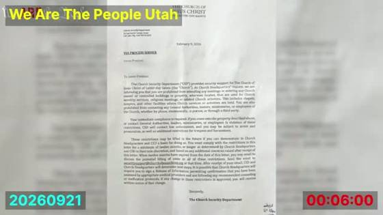
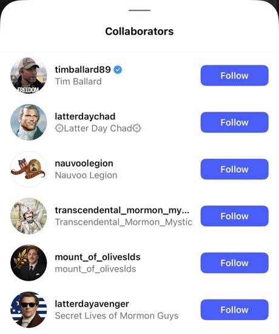
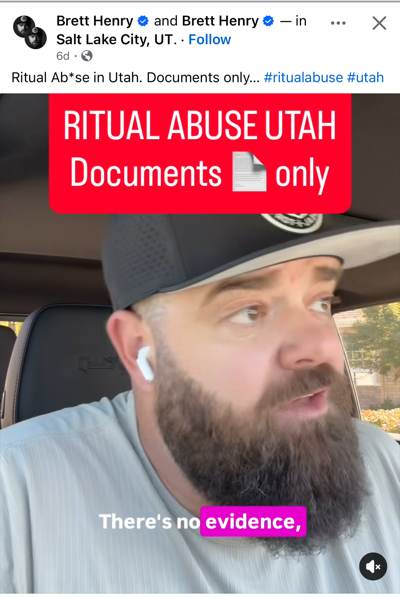

The SRA Loop
If your feed has told you that Church leaders are involved in satanic ritual abuse (SRA), that claim is coming from a small circle of online voices who quote, repost and promote one another. This page shows who they are, how one story moved between them last week, and what is actually documented.
Everything below comes from the speakers' own videos, captions and posts, quoted directly. A claim is labeled as a claim. Nothing here asks you to think less of anyone's faith. It asks you to look at where an accusation comes from before you accept it.
The voices
Former DHS agent, Sound of Freedom subject, excommunicated in 2023. Now promotes his series Backfire and reposts other people's accounts of Church discipline.
Podcast hosts. Received a Church Security Department trespass letter dated February 9, 2026. Named by an SRA-focused Substack for their “Shadows of Power” series.
Commentator who appears on the Zion Media channel, run with Shane Baldwin. Says his temple recommend was taken after he spoke about SRA. Publicly promoted by Ballard.
An SRA Substack, Investigations in Ritual Abuse, lists Latter Day Chad, the Prestons, Brett Henry (“the Bearded Realtor”), Shaun Attwood and Jacob K. Johnson as having “taken the topic and run with it.” Candace Owens has since picked it up.
How one story traveled in five days
The story: that the Prestons' stake president was excommunicated for refusing to excommunicate them. Watch who says it, and who repeats whom.
- About Sep 17–18
Ballard posts on Instagram that another stake president told him about it. This is second-hand. (As described by Latter Day Chad; we don't hold the original post.)
- Shortly after
Jason Preston denies it in the comments on Ballard's post, then checks and finds his stake president is “no longer a stake president,” but says he doesn't know whether he was excommunicated.
- Sep 19
Ballard posts a 3:01 Facebook reel. The voice isn't his: it's Latter Day Chad reacting to Preston's video and describing his own SRA-related discipline. Ballard's caption: “It's not a rumor about Preston's Stake President… Everybody please follow @LatterDayChad.” 27.7K views.
- Sep 21
We Are The People Utah posts a short episode. Now Preston says his stake president “was excommunicated himself.”
- Sep 21–22
Ballard posts a 2:53 Facebook reel that simply plays Preston's segment, captioned “This is pure EVIL!” 61.5K views, his most-watched video of the week.
- Sep 22
Latter Day Chad goes live on Zion Media, replays the same Preston segment, and ties it to SRA.
From a second-hand report to “excommunicated” in about five days, carried by three accounts quoting each other. The only step that changed the facts is the one where “no longer a stake president” became “excommunicated.”
In their own frames



What each says about SRA
“The Department of Justice released files publicly admitting that leaders of our world were engaging in this sort of SRA behavior… There are evil people who run our society. And if you don't believe that, then you don't believe in the Book of Mormon…”
Latter Day Chad, Zion Media livestream, Sep 22
“I don't know if it's going down to the extent that Jason Preston and his guests seem to talk about, but it's certainly going down 100%, and it is 100% being covered up. To what degree? I don't know.”
Latter Day Chad, same stream
“About a year ago after I first went on about SRA… my bishop and stake president were contacted by a lawyer who is also a member of the Seventy… as soon as we mentioned SRA, boom.”
Latter Day Chad, in Ballard's 3:01 reel, Sep 19
“…Latter Day Chad on Instagram, and Jacob K. Johnson of Rise to Liberty, as well as our old frenemy Jason Preston of We Are the People Utah, have all taken the topic and run with it.”
Investigations in Ritual Abuse (Substack), Sep 15. Opening of the sentence omitted.
“They have… blocked and/or covered up child sex abuse for well over a decade… Everybody please follow @LatterDayChad.”
Tim Ballard, Facebook caption, Sep 19. His posts in this set don't say “SRA”; he promotes the people who do. In Backfire itself (11:13) he calls it a “strawman” that his case is about “making up lies about SRA.”
Documented, claimed, unknown
| Statement | Status | Basis |
|---|---|---|
| The Prestons received a Church Security trespass letter | Documented | Letter dated Feb 9, 2026, shown on their own show |
| Ballard reposted Preston's and Chad's videos and told followers to follow Chad | Documented | Ballard's Facebook reels, Sep 19 and 21–22 |
| Ballard and Latter Day Chad co-authored an Instagram post | Documented | Collaborators sheet, Apr 12, 2026 |
| The Prestons' stake president was released | Claimed | Jason Preston, after checking; not independently confirmed |
| …and was excommunicated for refusing to excommunicate them | Claimed | Started second-hand with Ballard; Preston first denied it, then repeated it |
| A Seventy / Church lawyer pressured Chad's local leaders over SRA | Claimed | Latter Day Chad's own account only |
| Church leaders take part in or cover up satanic ritual abuse | Claimed | Asserted in these videos and posts; no evidence presented in any of them |
| These accounts coordinate with each other | Unclear | They repost and promote each other; Chad says they “aren't really coordinating together, except for me and Shane a little bit” |
Checking Backfire itself
Backfire: The Excommunication Story of Tim Ballard is the video Ballard keeps pointing people to. It runs over three hours and is streaming on his YouTube channel. The Backfire tracking repository on GitHub is a working archive for it: a full timestamped transcript, the corrections made to it, and claim-by-claim checks of what the video says. Start here:
- Truth claims inventoryEvery checkable factual claim Ballard makes in Backfire, in order.
- The stake president and “deep state”What Backfire alleges about Ballard's own (unnamed) stake president, and each “deep state” reference.
- Who gets blamedRunning index of who Ballard holds responsible for his excommunication.
- Claims about Elder BallardWhat the video says about M. Russell Ballard.
- The Wikipedia claim“Wikipedia removed articles the same day”: checked against Wikipedia's public edit history.
- The Argentina rescue storyThe February 2025 rescue claim, checked.
- How the transcript was madeMinute-by-minute transcription and boundary checks, so any quote can be traced to a timestamp.
- Transcript correctionsWhere the machine transcript was wrong and what was fixed.
Before you share
Utah has been here before. In the late 1980s and early 1990s, SRA accusations spread across the United States, including in Utah. Law enforcement looked hard: the FBI's Kenneth Lanning reported in 1992 that investigators had not corroborated the organized satanic-cult abuse being described, and a multi-year Utah investigation in the 1990s likewise reported no physical evidence of it.
That history doesn't mean abuse isn't real. It is, and it deserves a real report to people who can act on it, not a repost. If a child may be in danger in Utah, call the DCFS child abuse hotline:
1-855-323-3237
Or dial 911 in an emergency. Outside Utah, contact your local police or child protective services.
- Tim Ballard, Facebook reel 2:53: facebook.com/reel/1959541814741163
- Tim Ballard, Facebook reel 3:01: facebook.com/reel/2132062941003126
- We Are The People Utah (YouTube): youtube.com/watch?v=4hNRNZFOh1M
- Zion Media livestream (YouTube): youtube.com/watch?v=9r59wR_0MHk
- Investigations in Ritual Abuse, “Candace Owens on David Leavitt,” Sep 15, 2026: 1830goel.substack.com
- Instagram screenshots: @latterdaychad reel (Sep 4); Collaborators sheet (Apr 12); Brett Henry Facebook reel (Sep)
- Backfire tracking repository: github.com/AntMerrill/backfire-tracking
- Quotes are from machine transcripts checked against the video; small wording errors are possible.